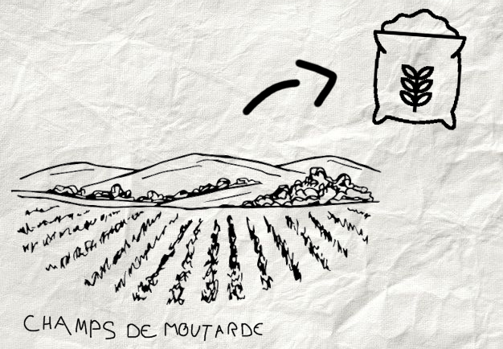
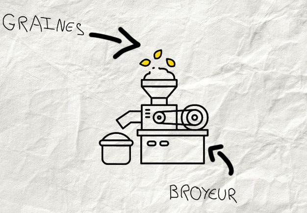
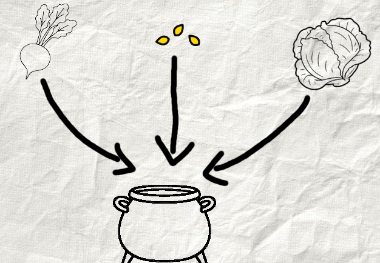
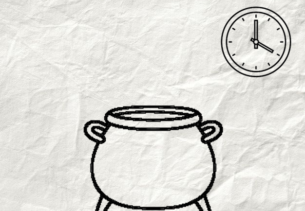
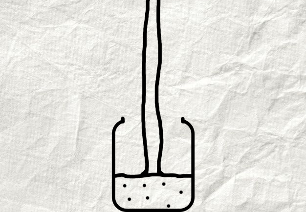

Les étapes de fabrication de notre moutarde
Découvrez comment nous fabriquons les pots de moutarde "L'Originale" !
1. Récolte des graines
Nous choisissons avec soin les meilleures graines de moutarde pour garantir une saveur optimale.
2. Broyage des graines
Les graines sont broyées pour libérer leurs arômes et préparer la moutarde.
3. Mélange avec les autres ingrédients
Les graines broyées sont mélangées avec du vinaigre, de l'eau, du sel et d'autres ingrédients secrets pour créer notre recette unique. Nous avons affiché ici l'illustration de conception de notre nouvelle saveur "Betteraves et choux" (elle va arriver très bientôt dans tous les magasins ! 🤫)
4. Maturation
Le mélange est laissé à maturer pendant une période déterminée (généralement 24 heures) pour développer pleinement les saveurs.
5. Conditionnement
La moutarde est conditionnée dans des pots stérilisés, prêts à être expédiés à nos clients.
6. Contrôle qualité
Chaque lot de moutarde est soumis à un contrôle qualité rigoureux pour garantir qu'il répond à nos normes élevées.